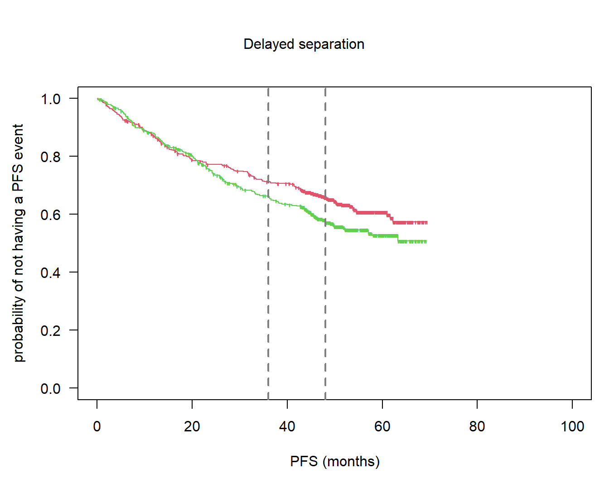

# --------------------------------------------------------------
# packages
# --------------------------------------------------------------
packs <- c("survival", "rpact", "survRM2")
for (i in 1:length(packs)){library(packs[i], character.only = TRUE)}Quantification of follow-up: code accompanying paper
Background
Code for the paper Rufibach et al. (2022) (download from arxiv) written by the “follow-up quantification” task force of the oncology estimand WG.
Purpose of this document
This R markdown file provides easy accessible code to compute all the quantifiers for follow-up. The github repository where this document is hosted is available here.
To illustrate the functions all clinical trial data in this file is simulated. In the paper, the PH examples uses real data.
Setup
Packages
Functions
Below all functions are defined.
quantifyFU: This function provides all the seven methods described in the paper draft.plot.qfu: Plot the distributions from which medians are computed.
# --------------------------------------------------------------
# functions
# --------------------------------------------------------------
# function to compute all the different variants of follow-up quantification
quantifyFU <- function(rando, event_time, event_type, ccod){
## =================================================================
## compute all FU measures
## =================================================================
# input arguments:
# - rando: date of randomization
# - event_time: time to event or time to censoring
# - event_type: 0 = event, 1 = lost to FU, 2 = administratively censored
# - ccod: clinical cutoff date
require(survival)
n <- length(rando)
# objects to collect distributions
res <- NULL
# indicator for lost to follow up
ltfu_cens <- as.numeric(event_type == 1)
# indicator for administratively censored
admin_cens <- as.numeric(event_type == 2)
# usual censoring indicator: 0 = censored (for whatever reason), 1 = event
primary_event <- as.numeric(event_type == 0)
# indicator for censoring
event_time_cens <- as.numeric(primary_event == 0)
# observation time regardless of censoring
ecdf1 <- as.list(environment(ecdf(event_time)))
res[[1]] <- cbind(ecdf1$x, 1 - ecdf1$y)
m1 <- median(event_time)
# observation time for those event-free
d2 <- event_time[event_time_cens == 1]
ecdf2 <- as.list(environment(ecdf(d2)))
res[[2]] <- cbind(ecdf2$x, 1 - ecdf2$y)
m2 <- median(d2)
# time to censoring
so3 <- survfit(Surv(event_time, event_time_cens) ~ 1)
res[[3]] <- so3
m3 <- summary(so3)$table["median"]
# time to CCOD, potential followup
pfu <- as.numeric((ccod - rando) / 365.25 * 12)
ecdf4 <- as.list(environment(ecdf(pfu)))
res[[4]] <- cbind(ecdf4$x, 1 - ecdf4$y)
m4 <- median(pfu)
# known function time
m5 <- rep(NA, n)
m5[event_time_cens == 1] <- event_time[event_time_cens == 1]
m5[primary_event == 1] <- pfu[primary_event == 1]
ecdf5 <- as.list(environment(ecdf(m5)))
res[[5]] <- cbind(ecdf5$x, 1 - ecdf5$y)
m5 <- median(m5)
# Korn's potential follow-up time
spfu <- sort(pfu)
pt <- rep(NA, n)
for (i in 1:n){
# timepoint at which we compute potential followup (t' in Schemper et al)
t <- spfu[i]
# proportion with pfu > t
pet <- mean(spfu > t)
# time to LTFU
so6 <- survfit(Surv(event_time, ltfu_cens) ~ 1, subset = (pfu >= t))
pltet <- ifelse(max(so6$time > t) == 0, 0, so6$surv[so6$time > t][1])
pt[i] <- pltet * pet
}
res[[6]] <- cbind(spfu, pt)
# now take the median of the distribution, see plot(t, pt, type = "s")
m6 <- max(spfu[pt >= 0.5])
# Potential follow-up considering events
m7 <- rep(NA, n)
m7[event_time_cens == 1] <- pfu[event_time_cens == 1]
m7[primary_event == 1] <- event_time[primary_event == 1]
ecdf7 <- as.list(environment(ecdf(m7)))
res[[7]] <- cbind(ecdf7$x, 1 - ecdf7$y)
m7 <- median(m7)
# summarize results for medians
dat <- matrix(NA, nrow = 7, ncol = 1)
dat[, 1] <- c(m1, m2, m3, m4, m5, m6, m7)
rownames(dat) <- c("Observation time regardless of censoring",
"Observation time for those event-free",
"Time to censoring", "Time to CCOD",
"Known function time", "Korn potential follow-up",
"Potential follow-up considering events")
colnames(dat) <- "median"
output <- list("medians" = dat, "distributions" = res)
class(output) <- "qfu"
return(output)
}
# function to plot distributions of various quantifiers
plot.qfu <- function(x, which = 1:7, median = TRUE){
dat <- x$distributions
par(las = 1)
plot(0, 0, type = "n", xlim = c(0, 1.05 * max(dat[[1]][, 1])), ylim = c(0, 1),
xlab = "time-to-event endpoint", ylab = "probability",
main = "Distributions used for quantification of follow-up")
if (3 %in% which){lines(dat[[3]], col = 3, conf.int = FALSE)}
which <- which[which != 3]
for (i in which){lines(dat[[i]], col = i)}
if(isTRUE(median)){abline(h = 0.5, col = grey(0.5), lwd = 2)}
legend("bottomleft", rownames(x$medians)[which], lty = 1,
col = (1:7)[which], bty = "n", lwd = 2)
}
# compute value of KM estimate and CI
confIntKM_t0 <- function(time, event, t0, conf.level = 0.95){
alpha <- 1 - conf.level
# compute ci according to the formulas in Huesler and Zimmermann, Chapter 21
obj <- survfit(Surv(time, event) ~ 1, conf.int = 1 - alpha, conf.type = "plain",
type = "kaplan", error = "greenwood", conf.lower = "peto")
St <- summary(obj)$surv
t <- summary(obj)$time
n <- summary(obj)$n.risk
res <- matrix(NA, nrow = length(t0), ncol = 3)
for (i in 1:length(t0)){
ti <- t0[i]
if (min(t) > ti){res[i, ] <- c(1, NA, NA)}
if (min(t) <= ti){
if (ti %in% t){res[i, ] <- rep(NA, 3)} else {
Sti <- min(St[t < ti])
nti <- min(n[t < ti])
Var.peto <- Sti ^ 2 * (1 - Sti) / nti
Cti <- exp(qnorm(1 - alpha / 2) * sqrt(Var.peto) /
(Sti ^ (3 / 2) * (1 - Sti)))
ci.km <- c(Sti / ((1 - Cti) * Sti + Cti), Cti * Sti /
((Cti - 1) * Sti + 1))
res[i, ] <- c(Sti, ci.km)}
} # end if
} # end for
res <- cbind(t0, res)
dimnames(res)[[2]] <- c("t0", "S at t0", "lower.ci", "upper.ci")
return(res)
}
# bootstrap survival data
bootSurvivalSample <- function(surv.obj, n, M = 1000, track = TRUE){
# bootstrap right-censored survival data according to Efron (1981)
# see Akritas (1986) for details
# surv.obj: Surv object to sample from
# n: sample size for samples to be drawn
# M: number of samples
n.surv <- nrow(surv.obj)
res.mat <- data.frame(matrix(NA, ncol = M, nrow = n))
for (i in 1:M){
ind <- sample(1:n.surv, size = n, replace = TRUE)
res.mat[, i] <- surv.obj[ind]
if (track){print(paste("sample ", i, " of ", M, " done", sep = ""))}
}
return(res.mat)
}
# compute value and CI for difference of survival probabilities at milestone,
# via bootstrap
confIntMilestoneDiff <- function(time, event, group, t0, M = 10 ^ 3,
conf.level = 0.95){
ind <- (group == levels(group)[1])
s.obj1 <- Surv(time[ind], event[ind])
s.obj2 <- Surv(time[!ind], event[!ind])
n1 <- sum(ind)
n2 <- sum(!ind)
res1 <- bootSurvivalSample(surv.obj = s.obj1, n = n1, M = M, track = FALSE)
res2 <- bootSurvivalSample(surv.obj = s.obj2, n = n2, M = M, track = FALSE)
boot.diff1 <- rep(NA, M)
boot.diff2 <- boot.diff1
for (i in 1:M){
# based on KM
t1km <- confIntKM_t0(time = as.matrix(res1[, i])[, "time"], event =
as.matrix(res1[, i])[, "status"], t0, conf.level = 0.95)[2]
t2km <- confIntKM_t0(time = as.matrix(res2[, i])[, "time"], event =
as.matrix(res2[, i])[, "status"], t0, conf.level = 0.95)[2]
boot.diff1[i] <- t1km - t2km
# based on exponential fit
r1 <- exp(- coef(survreg(res1[, i] ~ 1, dist = "exponential")))
t1 <- 1 - pexp(t0, rate = r1)
r2 <- exp(- coef(survreg(res2[, i] ~ 1, dist = "exponential")))
t2 <- 1 - pexp(t0, rate = r2)
boot.diff2[i] <- t1 - t2
}
# from bootstrap sample of differences just take symmetric quantiles to get
# CI for difference
alpha <- 1 - conf.level
ci1 <- quantile(boot.diff1, probs = c(alpha / 2, 1 - alpha / 2), na.rm = TRUE)
ci2 <- quantile(boot.diff2, probs = c(alpha / 2, 1 - alpha / 2), na.rm = TRUE)
res <- list("km" = ci1, "exponential" = ci2)
return(res)
}
# compute the extreme limits as described by Betensky
stabilityKM <- function(time, event){
ind <- (event == 0)
maxevent <- max(time[event == 1])
# extreme scenarios (not precisely) according to Betensky (2015)
# lower bound: every censored patient has event at censoring date
t_low <- time
c_low <- event
c_low[ind] <- 1
# upper bound: every censored observation has censoring time equal
# to maximum event time
t_up <- time
t_up[ind & (time < maxevent)] <- maxevent
c_up <- event
# collect results
res <- list("t_low" = t_low, "c_low" = c_low, "t_up" = t_up, "c_up" = c_up)
return(res)
}Example: Proportional hazards
Simulate a clinical trial with time-to-event endpoint using rpact
A clinical trial with very similar properties as the Gallium data in Rufibach et al. (2022) is simulated using rpact Wassmer and Pahlke (2021).
# simulate a clinical trial using rpact
# time unit is months
design <- getDesignGroupSequential(informationRates = 1,
typeOfDesign = "asOF", sided = 1, alpha = 0.025, beta = 0.2)
simulationResult <- getSimulationSurvival(design,
lambda2 = log(2) / 60, hazardRatio = 0.75,
dropoutRate1 = 0.025, dropoutRate2 = 0.025,
dropoutTime = 12,
accrualTime = 0:6,
accrualIntensity = 6 * 1:7,
plannedEvents = 350,
directionUpper = FALSE,
maxNumberOfSubjects = 1000,
maxNumberOfIterations = 1,
maxNumberOfRawDatasetsPerStage = 1,
seed = 2021)
# retrieve dataset
simdat <- getRawData(simulationResult)
# create variable with randomization dates
# note that addition / subtraction of date objects happens in days
# --> multiplication by 365.25 / 12 ~= 30 below
day0 <- as.Date("2016-01-31", origin = "1899-12-30")
rando <- day0 + simdat$accrualTime * 365.25 / 12
pfs <- simdat$timeUnderObservation
# event type variable: 0 = event, 1 = lost to FU, 2 = administratively censored
event_type <- rep(NA, nrow(simdat))
event_type[simdat$event == TRUE] <- 0
event_type[simdat$event == FALSE & simdat$dropoutEvent == TRUE] <- 1
event_type[simdat$event == FALSE & simdat$dropoutEvent == FALSE] <- 2
# PFS event
pfsevent <- as.numeric(event_type == 0)
# treatment arm
arm <- factor(simdat$treatmentGroup, levels = 1:2, labels = c("G", "R"))
# define clinical cutoff date based on simulation result
ccod <- day0 + simdat$lastObservationTime[1] * 365.25 / 12
# check
so1 <- summary(coxph(Surv(pfs, pfsevent) ~ arm))
so1Call:
coxph(formula = Surv(pfs, pfsevent) ~ arm)
n= 1000, number of events= 350
coef exp(coef) se(coef) z Pr(>|z|)
armR 0.2351 1.2650 0.1073 2.191 0.0285 *
---
Signif. codes: 0 '***' 0.001 '**' 0.01 '*' 0.05 '.' 0.1 ' ' 1
exp(coef) exp(-coef) lower .95 upper .95
armR 1.265 0.7905 1.025 1.561
Concordance= 0.528 (se = 0.014 )
Likelihood ratio test= 4.82 on 1 df, p=0.03
Wald test = 4.8 on 1 df, p=0.03
Score (logrank) test = 4.82 on 1 df, p=0.03Plot the Kaplan-Meier estimates:
par(las = 1)
plot(survfit(Surv(pfs, pfsevent) ~ arm), col = 2:3, mark = "'", lty = 1, xlim = c(0, 100),
xlab = "PFS", ylab = "probability of being event-free")
Precision
Compute survival probabilities, their differences and confidence intervals at milestones.
ms <- c(36, 48)
msR1 <- confIntKM_t0(time = pfs[arm == "R"], event = pfsevent[arm == "R"], t0 = ms,
conf.level = 0.95)
msG1 <- confIntKM_t0(time = pfs[arm == "G"], event = pfsevent[arm == "G"], t0 = ms,
conf.level = 0.95)
msR1 t0 S at t0 lower.ci upper.ci
[1,] 36 0.6625629 0.6054758 0.7152741
[2,] 48 0.5870704 0.4922056 0.6758830msG1 t0 S at t0 lower.ci upper.ci
[1,] 36 0.7149897 0.6622073 0.7624827
[2,] 48 0.6536542 0.5662833 0.7317616# differences
ms1d1 <- confIntMilestoneDiff(time = pfs, event = pfsevent, group = arm,
t0 = ms[1], M = 10 ^ 3, conf.level = 0.95)$km
ms2d1 <- confIntMilestoneDiff(time = pfs, event = pfsevent, group = arm,
t0 = ms[2], M = 10 ^ 3, conf.level = 0.95)$km
ms1d1 2.5% 97.5%
-0.003376164 0.114936362 ms2d1 2.5% 97.5%
-0.0007250327 0.1350419043 Quantification of follow-up using various methods
Now let us apply the above functions:
fu <- quantifyFU(rando = rando, event_time = pfs, event_type = event_type, ccod = ccod)
# medians of all these distributions:
fu$medians median
Observation time regardless of censoring 38.28363
Observation time for those event-free 42.87887
Time to censoring 44.05744
Time to CCOD 45.78363
Known function time 44.55744
Korn potential follow-up 44.15268
Potential follow-up considering events 40.31934Plot distributions:
plot(fu)
Example: delayed separation
Simulate a clinical trial with time-to-event endpoint using rpact
# Simulation assuming a delayed treatment effect
alpha <- 0.05
beta <- 0.2
design <- getDesignGroupSequential(informationRates = 1, typeOfDesign = "asOF", sided = 1,
alpha = alpha / 2, beta = beta)
piecewiseSurvivalTime <- c(0, 12)
baserate <- log(2) / 60
hr_nph <- 0.65
dropoutRate <- 0.025
dropoutTime <- 12
accrualTime <- 0:6
accrualIntensity <- 6 * 1:7
plannedEvents <- 389
maxNumberOfSubjects <- 1000
maxNumberOfIterations <- 10 ^ 3
simulationResultNPH <- getSimulationSurvival(design,
piecewiseSurvivalTime = piecewiseSurvivalTime,
lambda2 = c(baserate, baserate),
lambda1 = c(baserate, hr_nph * baserate),
dropoutRate1 = dropoutRate,
dropoutRate2 = dropoutRate, dropoutTime = dropoutTime,
accrualTime = accrualTime,
accrualIntensity = accrualIntensity,
plannedEvents = plannedEvents,
directionUpper = FALSE,
maxNumberOfSubjects = maxNumberOfSubjects,
maxNumberOfIterations = maxNumberOfIterations,
maxNumberOfRawDatasetsPerStage = 10 ^ 4,
seed = 2021)
# power for logrank test
simulationResultNPH$overallReject[1] 0.805# access raw simulation data
simdat <- getRawData(simulationResultNPH)
# extract simulation run 1 for example in paper
simpick <- 1
simdat_run1 <- subset(simdat, iterationNumber == simpick)
# median time-to-dropout
med_do <- - log(2) / log((1- dropoutRate)) * dropoutTime
# create variable with randomization dates
# note that addition / subtraction of date objects happens in days
# --> multiplication by 365.25 / 12 ~= 30 below
day0_nph <- as.Date("2016-01-31", origin = "1899-12-30")
rando_nph <- day0_nph + simdat_run1$accrualTime * 365.25 / 12
pfs1_nph <- simdat_run1$timeUnderObservation
# event type variable: 0 = event, 1 = lost to FU,
# 2 = administratively censored
event_type_nph <- rep(NA, nrow(simdat_run1))
event_type_nph[simdat_run1$event == TRUE] <- 0
event_type_nph[simdat_run1$event == FALSE &
simdat_run1$dropoutEvent == TRUE] <- 1
event_type_nph[simdat_run1$event == FALSE &
simdat_run1$dropoutEvent == FALSE] <- 2
# PFS event
pfsevent1_nph <- as.numeric(event_type_nph == 0)
# treatment arm
arm_nph <- factor(simdat_run1$treatmentGroup, levels = 1:2, labels = c("G", "R"))
# define clinical cutoff date based on simulation result
ccod1_nph <- day0_nph + simdat_run1$lastObservationTime[1] * 365.25 / 12Plot Kaplan-Meier estimates:
par(las = 1, mar = c(4.5, 4.5, 2, 1), oma = c(0, 0, 3, 0))
so1_nph <- survfit(Surv(pfs1_nph, pfsevent1_nph) ~ arm_nph)
plot(so1_nph, col = 2:3, mark = "'", lty = 1, xlim = c(0, 100), xlab = "PFS (months)",
ylab = "probability of not having a PFS event")
abline(v = ms, col = grey(0.5), lwd = 2, lty = 2)
# title
mtext("Delayed separation", 3, line = 0, outer = TRUE)
Precision
Compute survival probabilities, their differences and confidence intervals at milestones.
ms <- c(36, 48)
msR1_nph <- confIntKM_t0(time = pfs1_nph[arm == "R"], event = pfsevent1_nph[arm == "R"],
t0 = ms, conf.level = 0.95)
msG1_nph <- confIntKM_t0(time = pfs1_nph[arm == "G"], event = pfsevent1_nph[arm == "G"],
t0 = ms, conf.level = 0.95)
msR1_nph t0 S at t0 lower.ci upper.ci
[1,] 36 0.6626743 0.6066027 0.7145152
[2,] 48 0.5801327 0.5109735 0.6462818msG1_nph t0 S at t0 lower.ci upper.ci
[1,] 36 0.7125514 0.6617708 0.7584903
[2,] 48 0.6571132 0.5948195 0.7144277# differences
ms1d1_nph <- confIntMilestoneDiff(time = pfs1_nph, event = pfsevent1_nph, group = arm,
t0 = ms[1], M = 10 ^ 3, conf.level = 0.95)$km
ms2d1_nph <- confIntMilestoneDiff(time = pfs1_nph, event = pfsevent1_nph, group = arm,
t0 = ms[2], M = 10 ^ 3, conf.level = 0.95)$km
ms1d1_nph 2.5% 97.5%
-0.007217885 0.105350010 ms2d1_nph 2.5% 97.5%
0.01560682 0.13856650 Stability
par(las = 1, mar = c(4.5, 4.5, 2, 1), oma = c(0, 0, 3, 0))
so2_nph <- survfit(Surv(pfs1_nph, pfsevent1_nph) ~ 1, subset = (arm_nph == "G"))
plot(so2_nph, col = 2, mark = "'", lty = 1, xlim = c(0, 100), xlab = "PFS (months)",
ylab = "probability of not having a PFS event", conf.int = FALSE)
abline(v = ms, col = grey(0.5), lwd = 2, lty = 2)
# title
mtext("Delayed separation", 3, line = 0, outer = TRUE)
# add Betensky's scenarios
stab_del_t <- stabilityKM(time = pfs1_nph[arm_nph == "G"], pfsevent1_nph[arm_nph == "G"])
stab_del_c <- stabilityKM(time = pfs1_nph[arm_nph == "R"], pfsevent1_nph[arm_nph == "R"])
# lower
so2_nph_low <- survfit(Surv(stab_del_t$t_low, stab_del_t$c_low) ~ 1)
lines(so2_nph_low, col = grey(0.5), lty = 1, conf.int = FALSE)
# upper
so2_nph_up <- survfit(Surv(stab_del_t$t_up, stab_del_t$c_up) ~ 1)
lines(so2_nph_up, col = grey(0.5), lty = 1, conf.int = FALSE)
Power for RMST
# restriction timepoint for RMST
tau <- NULL # use minimum of the two last observed times in each arm
# compute RMST for every simulated dataset
# use simulationResultNPH from p30
rmst_est <- rep(NA, maxNumberOfIterations)
rmst_pval <- rmst_est
logrank_pval <- rmst_est
for (i in 1:maxNumberOfIterations){
sim.i <- subset(simdat, iterationNumber == i)
time <- sim.i$timeUnderObservation
event <- as.numeric(sim.i$event)
arm <- factor(as.numeric(sim.i$treatmentGroup == 1))
rmst <- rmst2(time = time, status = event, arm = arm, tau = NULL)
if (i == 1){rmst_sim1 <- rmst}
# we look at difference in RMST between arms
rmst_est[i] <- rmst$unadjusted.result[1, "Est."]
rmst_pval[i] <- rmst$unadjusted.result[1, "p"]
# logrank p-value (score test from Cox regression)
logrank_pval[i] <- summary(coxph(Surv(time, event) ~ arm))$sctest["pvalue"]
}
# empirical power
rmst_power <- mean(rmst_pval <= 0.05)
rmst_power[1] 0.692mean(logrank_pval <= 0.05)[1] 0.805simulationResultNPH$overallReject[1] 0.805Quantification of follow-up using various methods
Now let us apply the above functions:
# compute various follow-up quantities
fu1_nph <- quantifyFU(rando = rando_nph, event_time = pfs1_nph,
event_type = event_type_nph, ccod = ccod1_nph)
fu1med_nph <- fu1_nph$medians
# medians of all these distributions:
fu1med_nph median
Observation time regardless of censoring 45.47638
Observation time for those event-free 51.46786
Time to censoring 52.84881
Time to CCOD 54.64643
Known function time 53.31310
Korn potential follow-up 52.80119
Potential follow-up considering events 48.07205Plot distributions:
plot(fu1_nph)
References
Rufibach, Kaspar, Lynda Grinsted, Jiang Li, Hans-Jochen Weber, Cheng Zheng, and Jiangxiu Zhou. 2022. “Quantification of Follow-up Time in Oncology Clinical Trials with a Time-to-Event Endpoint: Asking the Right Questions.” arXiv. https://doi.org/10.48550/arxiv.2206.05216.
Wassmer, Gernot, and Friedrich Pahlke. 2021. Rpact: Confirmatory Adaptive Clinical Trial Design and Analysis. https://CRAN.R-project.org/package=rpact.